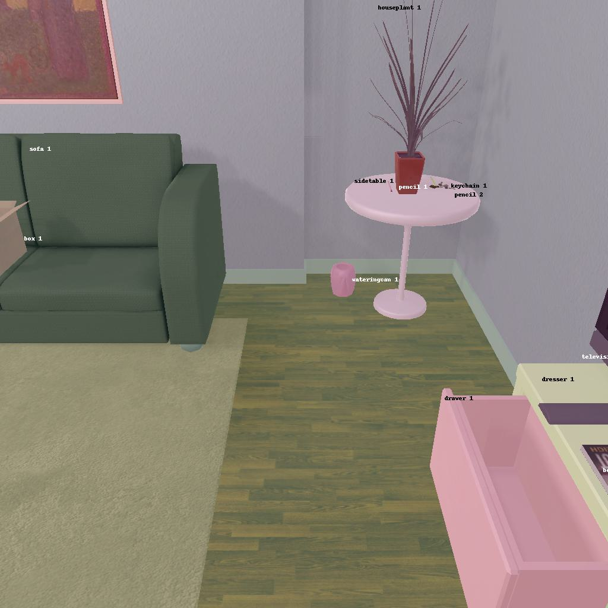

---------------------------------------------------------task: 5---------------------------------------------------------
--------------------------------------------------------------------------------------------------------------------------------------------------------------------
--------------------------------------------------------------------------------------------------------------------------------------------------------------------
Step:--------------------------------------------------------------------------8-------------------------------------------------------------------------------
----------------------------------------
VLM Prompt:
Image1:
Image2:
Image3:
**Instruction**
1. Analyze the provided image to identify all visible household objects, focusing on those relevant to the task description "put some book on armchair."
2. Use the analysis of the image and the task hint "The agent must find an object of the desired type, pick it up, find the correct location to place it, and put it down there." to answer the question: what is the most reasonable action in the choices for the task description "put some book on armchair"?
4. Decide and write the answer using the template: The answer is: (i): , where i is the real number. If there is no desired object in the image, search every place based on **Initial Observation** to find the object. And if no one is exactly correct, choose a similar answer.
**Initial Observation**
You are in the middle of a room. Looking quickly around you, you can see armchair (1), sofa (1), coffeetable (1), drawer (1-4), sidetable (1-3), dresser (1)
**Answer Choices**
(1): go to armchair 1
(2): go to sofa 1
(3): go to coffeetable 1
(4): go to sidetable 1
(5): go to dresser 1
(6): go to drawer 2
(7): go to drawer 3
(8): go to drawer 4
(9): go to sidetable 2
(10): go to sidetable 3
(11): close drawer 1
(12): put book 1 in/on drawer 1
(13): examine book 1
**Answer**
Let's think step by step by following the instructions.
----------------------------------------
----------------------------------------
Original Response:
First, we need to find an object of the desired type, which is a book. Observing the images, we can see that in Image3, there is a book on the floor named "book 1". Since we have identified a book, the next step is to pick it up.
Now, we need to find the correct location to place the book, which is on an armchair according to the task description. From the initial observation, we know there is an armchair in the room, but it's not visible in the provided images.
Based on the information given, the most reasonable action to take would be to first go to the book and pick it up. Since the action of picking up the book is not listed in the answer choices, the closest action related to the book would be to examine the book, which implies interacting with it and potentially leading to picking it up.
The answer is: (13): examine book 1.
----------------------------------------
----------------------------------------
>>> Refine Original VLM Response and Get Pure Action: examine book 1
----------------------------------------
-----------------------------------------------------------------
Running time: 12.747027397155762 seconds
Total Money: 2.6455999999999995
-----------------------------------------------------------------
-----------------------------------------------------------------
Text Observation:This is a normal book 1
-----------------------------------------------------------------
UNSUCCEED